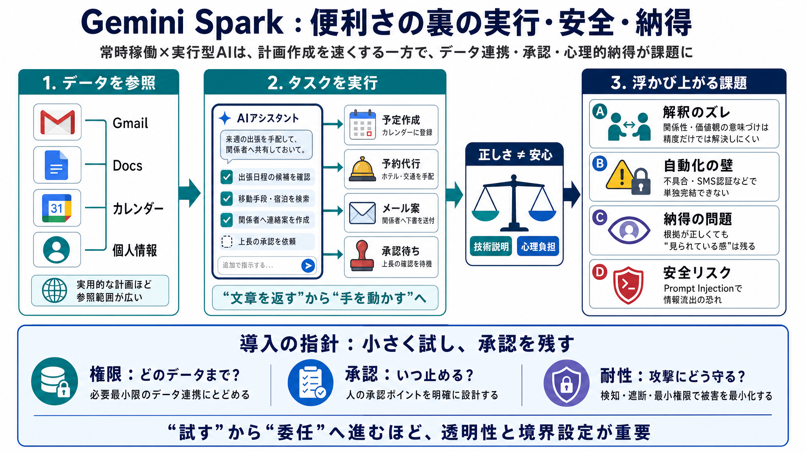

Gemini Spark vs OpenClaw — Hosted vs Self-Hosted Personal AI Agents
Gemini Spark vs OpenClaw personal AI agent comparison. # Gemini Spark vs OpenClaw: Who Holds Your Personal Agent? Google…

Gmail・Docs・カレンダー等に接続して“タスク実行”まで行うAIは、短時間で具体的な計画を作る一方で、関係性のズレ・安全・承認の難しさが表面化します。
エージェントがメールや予定を参照して計画を“実用レベル”にするほど、攻撃面と誤作動の影響範囲も広がり得ます。
回答生成だけでなく、オンライン操作・メール送信（承認が必要）など“手を動かす”設計が、便利さとリスクを同時に増幅します。
Gmail / Docs / カレンダー等の個人情報（参照・抽出）
予定作成、予約代行、メール案作成、必要に応じて承認
※ここでの要点は「文章を返す」ではなく、「参照してタスクを進める」点です。
実験では、メールやカレンダーから実際に予約されたカラオケ情報（場所・日時・注意事項）を拾い、ゲスト・周辺店・アフタープラン・招待文まで含む長い計画書を作成しました。
同居の恋人が “close friend（親しい友人・頻繁に一緒にいる存在）” として配置
誕生日当人（筆者本人）がゲストに入っておらず、不快さと滑稽さを感じた
便利さが高いほど、こうした“価値観の意味づけ”が意思決定に直結します（ズレは精度だけでは解消しにくい）。
不具合（グリッチ）で完了できず、進めても最後まで届かない
6桁の認証コードがSMSで送られるなど、単独完結できない場面が露呈
アフタープラン（特定の“ゲイバー”）について、AIは「アイデンティティ推測ではなく、Workspace履歴の正確なキーワードに基づいて選んだ」と説明したとされています。
履歴に記録された名称・取引・既存の旅程などから選択
“なぜそこまで分かるのか”というプロファイル感への不安
根拠が合理的でも、プライバシー体験（心理）には別軸がある点が重要です。
AIエージェントがユーザーデータにアクセスできるほど、悪意ある指示で情報を外部へ出させる等の「プロンプトインジェクション」リスクも高まり得る、と記事はGoogleの注意喚起を踏まえて問題視します。
行動（計画生成、予約失敗、認証発生）の描写があり性能評価に材料
攻撃面はデータ連携と実行範囲に連動し、ガードレールが必須
出力が具体化するほど“晒され感”が強くなる
さらに Critical（批判）: 事例依存、Practical（実務）: 小さく試し承認を残す、Ethical（倫理）: 関係性の境界設定が必要。
エージェント型AIは、権限（どのデータまで）、承認フロー（いつ止めるか）、攻撃耐性の透明性を理解したうえで、重要情報は慎重に任せるべきだと示唆されています。
Gemini Spark vs OpenClaw personal AI agent comparison. # Gemini Spark vs OpenClaw: Who Holds Your Personal Agent? Google…
# Gemini Spark is Google's answer to OpenClaw. OpenClaw started a mini-revolution in the AI world by showing what was po…
# Gemini Spark Is Google’s Response to OpenClaw’s 24/7 AI Agent. Google’s always-running, data-hungry AI agent is design…
# Gemini Spark is Google’s Answer to the OpenClaw Hype, High-Risk Actions Included. At its annual developer conference G…
# Gemini Spark is Google's answer to OpenClaw. OpenClaw started a mini-revolution in the AI world by showing what was po…